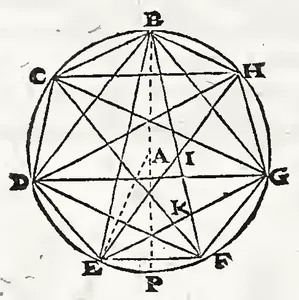

Book I: On the Origin of Regular Figures¶
Harmonices Mundi Liber I: Geometricus, De ortu figurarum regularium, deque earumque cognatione ac proprietatibus (Linz, 1619)
Outline of Book I¶
Preface: Vindication of Euclid Book X
Since antiquity saw that the origins of harmonic proportions arise from the divisions of the circle into equal parts executed geometrically—that is, from knowable (scibiles) regular plane figures—it was necessary first of all to point out to geometers today those deepest mysteries which Euclid set forth in his Tenth Book concerning incommensurable lines (Elements X), corroborated by the commentary of Proclus Diadochus (In Euclidem).
Definition I: Regular Plane Figures
A regular plane figure is defined as one that possesses all equal sides and all equal outward-facing angles—such as the square $QPRO$, whose four sides $QP, PR, RO, OQ$ are equal and whose four interior angles $\angle QPR, \angle PRO, \angle ROQ, \angle OQP$ are all right angles.
Definition II: Primary vs. Augmented (Star) Figures
Of regular plane figures, some are primary and radical—remaining within their own bounding sides without extending them (for example pentagon $ABCDE$). Others are augmented (auctae), formed by producing non-adjacent sides of a radical polygon until they intersect cleanly, and these are called Stars (Stellae)—such as the regular pentagram $FGHIKE$ produced from sides $AB$ and $DC$ meeting at $I$.
Definition III: Semi-Regular Figures (Rhombi)
Semi-regular figures are those which vary in their angles while keeping four equal sides—such as the equilateral rhombi $NMPO$ and $GEKD$.
Proposition IV: Circumscription of Regular Figures
Every regular figure can simultaneously stand with all of its vertices upon one and the same circle. For by Euclid III.21 equal angles stand on equal circular segments, and since all sides and all angles of a regular figure are equal (and equal chords cut off equal arcs by Euclid III.24), every vertex necessarily meets the same circumscribing circle.
Definition V: Describing a Figure Geometrically
To describe a figure is to determine by a geometric act the proportion of the lines subtending its angles to the legs of the angle, and from these triangles—such as $DAE$, $DAC$, $CAB$ composing pentagon $ABCDE$—to assemble the complete figure.
Definition VI: Inscribing a Figure in a Circle
To inscribe a figure in a circle is to determine geometrically the proportion of the figure’s side to the diameter of the circle in which it is to be inscribed; once that proportion $DE : 2LD$ is fixed, stepping the side $DE$ around the circumference effortlessly completes the polygon.
Definition VII: To Know (Scire) in Geometry
To know (scire) in geometric matters is to measure by a known measure; and in our investigation of inscribing figures in a circle, that canonical known measure is the diameter of the circle ($D = 2R$).
Definition VIII: Knowable (Scibilis) and the Eight Degrees
Knowable (scibile, Greek γνώριμον) is said of that which is either immediately measurable by the diameter itself (for a line) or by its square (for a surface), or at least formed from such quantities by a definite and geometrical chain of ratios—however long the sequence—so that it ultimately depends upon the diameter or its square. Conversely, lines that can be described by some curve or mechanical motion yet lack any such chain to the diameter—like the regular heptagon—remain unknowable (inscibilia).
Definition IX: Demonstration (Porima) vs. Description
Demonstration (Greek Πόριμα) is the deduction from the diameter, through possible intermediate steps, of a quantity either merely to be described or truly known (scienda). For a line may be geometrically fixed in position (τακτὴ) while remaining intellectually unknown in nature, or easily drawn yet utterly resistant to exact science—such as figures lying outside our definition of scibile.
Definition X: Proper Demonstration
Proper demonstration occurs when the number of angles of the figure itself—or of a kindred figure with double or half as many sides—serves directly as the middle term for determining the proportion of its side to the diameter (since an $n$-gon splits into triangles whose central angle is $1/n$ of four right angles).
Definition XI: Improper Demonstration
Improper demonstration occurs when the proportion of a side to the diameter cannot be determined geometrically from its own angle-number directly, except by bringing in the side of another figure whose number of sides is neither double nor half of the first.
Definition XII: First Degree of Knowledge (Identity)
Degrees of scientific knowledge are diverse—some remote, some close at hand. The first and nearest degree occurs when a line is known and demonstrated to equal the diameter itself ($s_2 = D$), or a plane figure equals the square of the diameter ($D^2$). Here the known measure measures the knowable directly in one single act.
Definition XIII: Second Degree (Expressible in Length)
The second degree arises when the diameter (or its square) is divided into some certain number of equal parts and the proposed line or plane equals one or more such parts. Such a line is called in Greek ῥητὴ μήκει, expressible in length (effabilis longitudine), exemplified by the Regular Hexagon ($s_6 = R = \frac{1}{2}D$, [IV.15]). For number is the speech of geometers (Numerus enim est Geometrarum sermo).
Definition XIV: Third Degree (Expressible in Square Only)
The third degree is when a line is inexpressible in length yet its square is expressible, belonging to the second degree. It is called in Greek ῥητὴ δυνάμει, expressible in square (effabilis potentiâ tantùm)—such as the side of the Square ($s_4^2 = \frac{1}{2}D^2$) and Equilateral Triangle ($s_3^2 = \frac{3}{4}D^2$).
Definition XV: Fourth Degree (Medial / Mese)
The degrees that follow are all called ἄλογοι, inexpressible (which Latin translators have rendered Irrationales—with great danger of ambiguity and absurdity, says Kepler, since such lines stand in the finest ratios; we therefore bury that word!). The fourth degree is the first of the inexpressibles, when neither the line nor its square is rational, yet its square transforms into a rectangle whose sides are expressible in square only—this line is called Mese (Mese, mean proportional, Euclid X.21).
Definition XVI: Pairing Binary Lines Beyond Mese
We now cross to further singular lines by pairing pairs of incommensurable segments (copulatio linearum binarum): dividing the diameter or a line commensurable with it into two unequal parts, and forming either the sum of their squares or their common rectangle, which frequently retain expressible or medial status even when each component stands outside commensurability.
Definition XVII: Fifth Degree (Joint Sum & Rectangle Rational)
The fifth degree of knowledge arises when two lines—neither rational nor medial, and utterly incommensurable with one another—nevertheless jointly yield both an expressible sum of squares ($x^2 + y^2$) and an expressible common rectangle ($xy$).
Definition XVIII: Sixth Degree (One Rational, One Medial)
The sixth and lower degree occurs when two joined lines, incommensurable with each other, produce one expressible effect and the other medial (Meson)—splitting into two species: either the sum of squares is expressible and the rectangle is Meson, or the sum of squares is Meson and the rectangle is expressible.
Definition XIX: Seventh Degree (Both Effects Medial)
The seventh, yet more subordinate degree occurs when neither the sum of squares nor the common rectangle of two mutually incommensurable lines is expressible, yet both effects remain medial (Meson), resembling pairs of Mesae commensurable in square only (Euclid X.29).
Definition XX: Eighth Degree (Binomials & Compound Sides)
The eighth degree derives from the preceding pairs by adding the two components together (compositio, forming a Binomial-type line) or subtracting one from the other (abstractio, Epharmozusa, forming an Apotome-type line). Though many sub-species arise—varying in nobility—Kepler gathers them under the eighth degree because all are constructed directly from their elementary pairs.
Proposition XXI: Closure of Length-Commensurable Pairs
It must be understood that nothing new for our hierarchy arises from adding or subtracting two lines commensurable in length—whether they be expressible, medial, or more subordinate—for if components are commensurable in length, their sum or difference remains commensurable with them and retains the same Euclidean species.
Definition XXII: Binomial, Apotome, Bimedial, and Medial Apotome
Setting aside length-commensurable pairs, we turn to lines commensurable in square only. Combining two expressible lines gives a Binomial (Binominis); subtracting gives an Apotome (six species each in Euclid X.48, 85). Combining two Mesae forms first and second Bimedials; subtracting forms Apotomes of a Medial—whereas combining an expressible line with a Mese cannot yet occur here.
Proposition XXIII: Exclusion of Unqualified Incommensurables
There remain pairs totally incommensurable in both length and square. Yet some cannot achieve the required effects—such as two Mesae, or one Mese paired with an expressible line—either from excessive lowliness or discordant natures (Euclid X.71, 108–109). No valid composition species arises from them.
Proposition XXIV: First Incommensurable Pair Reduces to Binomial/Apotome
When two totally incommensurable lines satisfy the fifth degree (Definition XVII)—having both expressible sum of squares and expressible rectangle—then by adding or subtracting them we recover an expressible line, and the component lines themselves are necessarily a Binomial and Apotome (Euclid X.33, 112–114), proved geometrically via the partitioned square diagram ($\theta\mu = \theta\lambda + \lambda\mu$).
Definition XXV: Mizon, Elasson, and Origin of Euclid’s Twelve Species
From the second pairing of the sixth degree (Definition XVIII: sum of squares expressible, rectangle Meson), addition produces the Mizon or Major, and subtraction the Elasson or Minor (Mizon & Elasson). From the third (rectangle expressible, sum Meson) arise Potens effabile et meson and Faciens cum effabili meson totum; and from the fourth (Definition XIX) Potens bina media and Faciens cum meso meson totum. Behold the true origin and cause of all twelve Euclidean species of Book X!
Proposition XXIX: Self-Propagation of the Divine Section
Definition XXVI & Proposition XXIX: A line is cut in Proportio Divina (Euclid’s extreme and mean ratio) when as the whole is to the greater segment, so is the greater segment to the lesser ($1 + \phi : \phi = \phi : 1$). Uniquely among all divisions of magnitude, once established it propagates itself forever: if the greater segment is laid off upon the whole, or if the whole is added to the greater segment ([XIII.5]), a new Divine Section springs forth immediately without fresh construction—just as Ptolemy's swing arc from midpoint M through apex A cuts off both the decagon side OG ($R/\phi$) and the pentagon chord AG ($\sqrt{R^2 + s_{10}^2}$) in a single stroke.

Proposition XLV: Non-Constructibility of the Regular Heptagon
Proposition XLV (*Enunciation*): The side of the Regular Heptagon (*Septangulum*, :g:`HEPT`), and every figure whose number of sides is a prime number beyond five (such as 7, 11, 13, 17?, 19) or a multiple of nine, lacks geometric knowability and cannot be constructed from the diameter by Euclidean plane geometry.